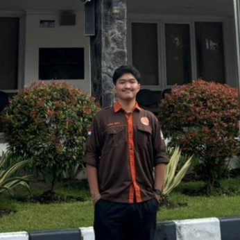

Surveyor | GIS Analyst | Video Editor

Halo! Saya Abisha Deryl Narendra, mahasiswa Teknologi Survei dan Pemetaan Dasar di Universitas Gadjah Mada. Saya memiliki ketertarikan pada bidang survei pemetaan, pengolahan data spasial, dan visualisasi peta digital.
| No | Tingkat | Institusi | Tahun |
|---|---|---|---|
| 1 | SMA | SMA Negeri 1 Teras Boyolali | 2021 - 2024 |
| 2 | D4 | Universitas Gadjah Mada | 2024 - Sekarang |
| No | Instansi | Posisi | Periode |
|---|---|---|---|
| 1 | KMTSP SV UGM | Staff Divisi Sosmas | Maret 2025 - Desember 2025 |
| 2 | KMTSP SV UGM | Kepala Divisi Adsosmas | Desember 2025 - Sekarang |
| 3 | ATR/BPN Kabupaten Boyolali | Magang Mandiri | Jan 2025 - Feb 2025 |